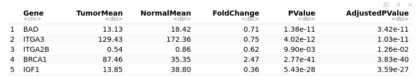
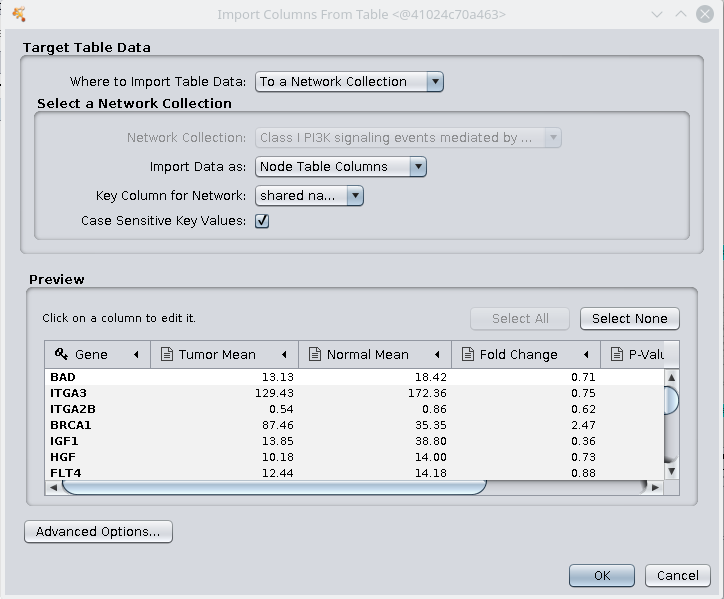
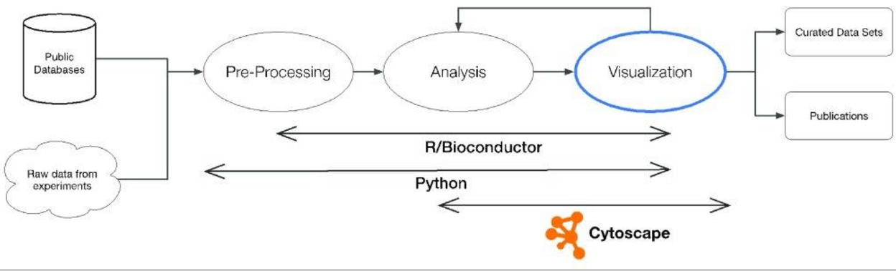
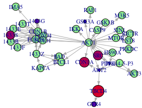
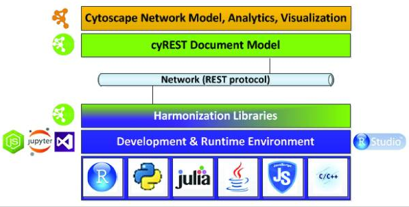
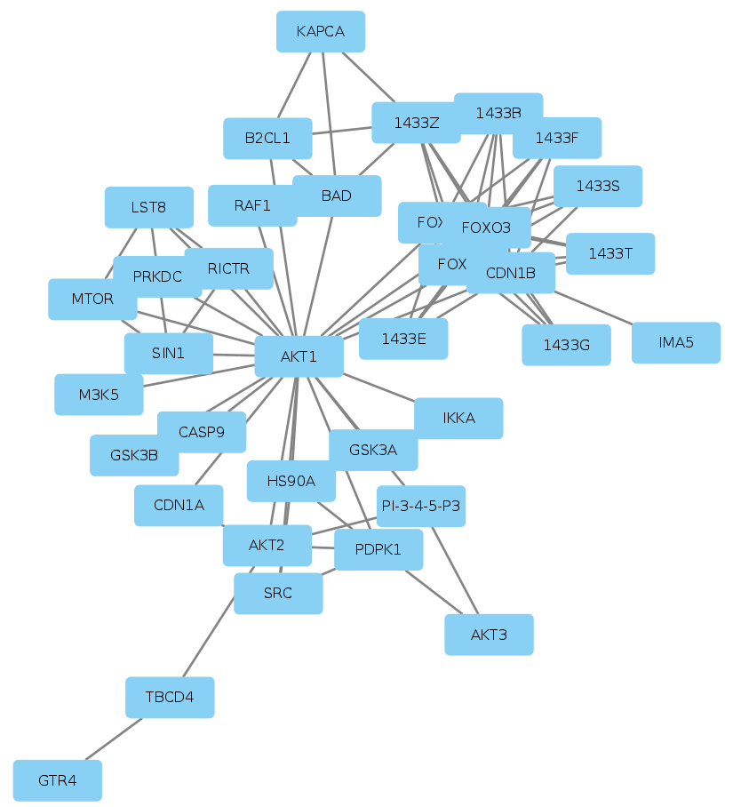
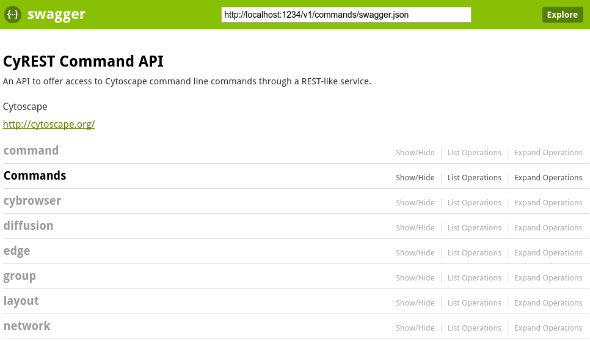

NDExR and Cytoscape: Interactive and automated visualization of biological networks using R
by Florian Auer
Frank Kramer, Tim Beißbarth
Statistical Bioinformatics,
University Medical Center Göttingen
Biological Networks
- Gene regulatory network
- Signaling network
- Protein-Protein interaction
- Metabolic network
- Drug-disease associations
- ...
Network Visualization
The PI3K/AKT signaling pathway: Associations of miRNAs with dysregulated gene expression in colorectal cancer.
Slattery ML, Mullany LE, Sakoda LC, Wolff RK, Stevens JR, Samowitz WS, Herrick JS.
Mol Carcinog. 2018 Feb;57(2):243-261.doi: 10.1002/mc.22752. Epub 2017 Nov 19.
"The Kyoto Encyclopedia of Genes and Genomes (KEGG) [...] pathway map for PI3K‐AKT‐signaling was used to identify genes associated with this pathway."
Differential Gene Expression
Import Gene Table
File → Import → Table → File... → "PMC5760356.csv"
Automate!
- For things you want to do multiple times, e.g., loops
- For things you want to repeat in the future
- For things you want to share with colleagues or publish
- For things you are already working on in R or Python, etc
Bioinformatics Workflow
Visualization with iGraph
## using ndexr to convert an RCX to an igraph object
graph = rcx_toNGraph(network)
plot(graph)
## map gene expression to vertices
nodeSize = merge(data.frame(name=V(graph)$name),
geneRegulation[,c("Gene", "FoldChange")],
by.x = "name", by.y = "Gene", all.x = T)
## assign color to vertices
nodeSize$color = ifelse(is.na(nodeSize$FoldChange), 0,
as.integer((nodeSize$FoldChange^3)*120))
V(graph)$color = ifelse(is.na(nodeSize$FoldChange), "lightgreen",
rgb(nodeSize$color,0,255-nodeSize$color,
maxColorValue = 255))
## adjust edge weight for force directed layout
E(graph)$weight = ifelse(E(graph)$i=="in-complex-with",1,2)
## visulize the igraph!
plot(graph,
vertex.size = ifelse(is.na(nodeSize$FoldChange), 12,
as.integer(nodeSize$FoldChange^3*11)),
vertex.label.cex = .7,
edge.arrow.size=.4)
Looks better..
Cytoscape Script
#Import network
network import file indexColumnTargetInteraction=1 ...
indexColumnSourceInteraction=2 file="input.xgmml"
#Import and set style
vizmap load file file="style.xml"
vizmap apply styles=style-name
#Set layout
layout attribute-circle
#Set view to fit display
view fit content
#Save
view export OutputFile="output-name" options=PDFcyREST App => Core

Visualization with Cytoscape
nodes = data.frame(id=network$nodes$'@id',
name=network$nodes$n,
group=ifelse(network$nodes$n %in% geneRegulation$Gene,
"changed","normal"),
stringsAsFactors = F)
edges = data.frame(source=network$edges$s,
target=network$edges$t,
id=network$edges$'@id',
interaction=network$edges$i,
stringsAsFactors = F)
## send the network to Cytoscape
network.suid <- createNetwork(nodes, edges,
"FancyNetwork", "MyCollection")
Plain network in Cytoscape
Import Gene Table
## add the gene regulation as table
loadTableData(geneRegulation,
data.key.column = "Gene",
table = "node",
table.key.column = "name")
Defining default Style
style.name = "FancyStyle"
defaults <- list(NODE_SHAPE="ROUND_RECTANGLE",
NODE_FILL_COLOR="lightgreen",
NODE_SIZE=30,
NODE_LABEL_FONT_SIZE=8,
EDGE_WIDTH=4,
EDGE_TARGET_ARROW_UNSELECTED_PAINT="#404040",
EDGE_TARGET_ARROW_SHAPE="delta")
## node-table:name is used as default node label
nodeLabels <- mapVisualProperty('node label','name','p')
Adding a custom Node Style
nodeShape <- mapVisualProperty('node shape',
'group','d', c("changed"), c('ellipse'))
## node size and color, and label size is based on fold change
nodeSize <- mapVisualProperty('node size',
'FoldChange', 'c', c(0.7,1.5), c(40,100))
nodeFills <- mapVisualProperty('node fill color',
'FoldChange', 'c', c(0.7,1.0,1.5),
c('#FF0000','#888888','#0000FF'))
nodeLabelFontSize <- mapVisualProperty('node label font size',
'FoldChange', 'c', c(0.7,1.5), c(11,29))
...and Edge Style
edgeArrowShape <- mapVisualProperty('edge target arrow shape',
'interaction', 'd', c("in-complex-with"), c('none'))
edgeColor <- mapVisualProperty('edge color',
'interaction', 'd', c("in-complex-with"), c('#FF4949'))
Create and apply the custom Style
createStyle(style.name, defaults, list(nodeLabels,
nodeSize,
nodeFills,
nodeLabelFontSize,
nodeShape,
edgeArrowShape,
edgeColor))
applyStyle(style.name)
Export network
## export as png
exportImage("cytoscape.png", "png")
Send Network to NDEx
## get the new network
newNetwork <- createIgraphFromNetwork("FancyNetwork")
## convert to RCX
newRCX = ngraph_fromRCX(newNetwork)
## create a new network on NDEx
ndex_create_network(ndexcon, newRCX, )
CyREST API
Layouts
- Grid
- Hierarchical
- Circular (Radial)
- Partitions
- Force-Directed
- Combining layouts
- Multi-layer layouts
- Many, many others
Analytical Approaches
Network topology statistics such as node degree, degree distribution, centralitiy, clustering coefficient, shortest paths, and robustness of the network to the random removal of single nodes are important network characteristics.
Modularity refers to the identification of sub-networks of interconnected nodes that might represent molecules physically or functionally linked that work coordinately to achieve a specific function.
Motif analysis is the identification of small network patterns that are over-represented when compared with a randomized version of the same network. Regulatory elements are often composed of such motifs.
Network alignment and comparison tools can identify similarities between networks and have been used to study evolutionary relationships between protein networks of organisms.
Further Reading
- Tutorials: cytoscape.github.io/cytoscape-tutorials
- Docker with Cytoscape and RStudio: hub.docker.com/r/flockowak/cytoscape/
- Slides/RMarkdown florian-j-auer.github.io/NDExR-and-Cytoscape